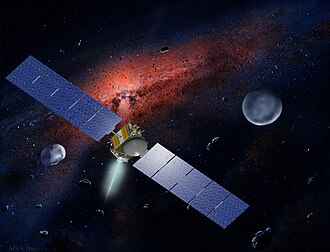
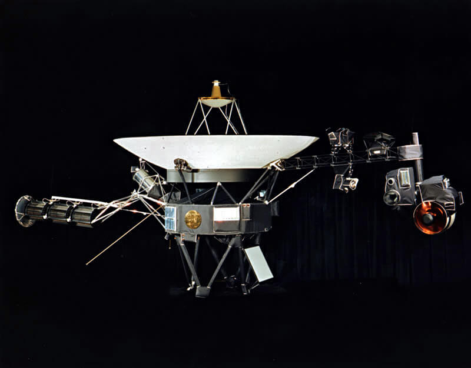
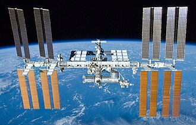

Sondas Espaciais e a Exploração do Universo
As sondas espaciais são naves não tripuladas projetadas para explorar o espaço profundo, reunindo dados e fotos de planetas e astros distantes.
Como Funcionam as Sondas
Diferente de satélites que orbitam a Terra, as sondas se deslocam pelo espaço impulsionadas por gravidade e energia solar, transmitindo informações via ondas de rádio.

Instrumentos Científicos
Elas carregam câmeras, espectrômetros e sensores para analisar atmosferas, solos e campos magnéticos dos corpos celestes.
Galeria de Imagens



Referências
Fonte dos dados e imagens: NASA, Agência Espacial Europeia (ESA) e Wikipédia.